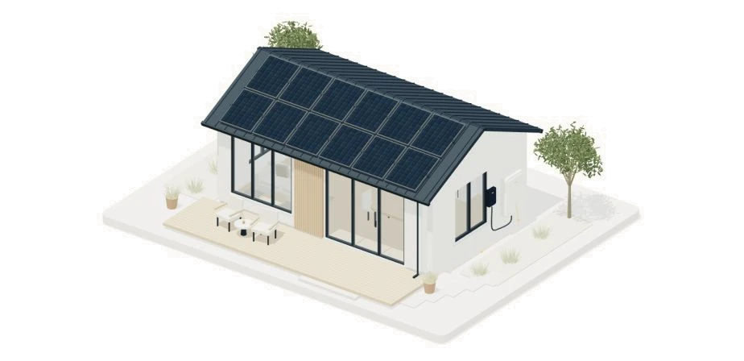

A material system for a brighter solar brand: translucent white surfaces, soft chromatic light and clear slate typography. These component examples use the website’s shared glass styles. Sample controls are static and labelled; they do not submit information.
01 /
The colour of possibility.
Logo-derived slate and orange, lifted by amber light and a cool ambient slate tint. The page stays predominantly light.
Paper#FBFAF7Main canvas
White#FFFFFFGlass tint source
Slate#2D3F51Text · structure
Muted#606C75Supporting copy
Solar orange#F7874CPrimary action
Amber#FEB456Logo gradient · light
Accent#D96532Display accents
Rust#AC4726Small accents · focus
Peach#F8E5D7Warm illumination
Line#DEDED5Quiet dividers
Slate and orange are sampled from the supplied logo. Supporting shades
are UI adaptations. Rust is used for small accent text and focus
outlines; bright orange is used as a button surface.
02 /
A surface made of light.
Real backdrop blur over coloured geometry. The illumination remains behind the glass; it is not a flat colour painted onto the panel.
Slate-lit glassWhite 54% · white edge 90% · radius 24px desktop / 20px mobileShared .glass-surface
THE SURFACE54% / 72%
Transparent white, with a stronger option behind more demanding content.
THE DIFFUSION28px / 135%
Desktop blur is 28px; mobile uses 22px. Both preserve a soft impression of the light behind at 135% saturation.
THE EDGE24px / 90%
Primary surfaces use 24px corners on desktop and 20px on mobile. Supporting mobile surfaces use 18px; the enquiry panel uses 22px.
The coloured discs and rails are deliberately visible outside the glass and diffused beneath it. Keep body copy slate and increase surface opacity before sacrificing readability. The reference page has a solid light fallback when backdrop filtering is unavailable.
03 /
Clarity, with a human touch.
DISPLAY PAIRING
Meet your sun-powered life.
Instrument Sans · Medium 500 Instrument Serif · Italic 400 Display
headlines use tight spacing and compact line height.
READING & INTERFACE
Your own source of possibility.
Solar panels turn daylight into electricity. The right starting
point is your roof, the energy you use and when you use it.
GOOD ENERGY. FOR REAL LIFE.
Body · Instrument Sans 400 · 14–16px Labels and actions ·
Instrument Sans 500–600 Local font files · SIL Open Font
License 1.1
04 /
A clear next step.
Native disabled controls demonstrate each appearance without
triggering an action.
Default
Hover · warm gradient + slight lift
Keyboard focus · 3px outline
Disabled · no action
Underlined · paired · icon-only
05 /
Clarity, through every layer.
Persistent labels, readable values and specific feedback. Fields
below are read-only examples.
Default
50px specimen height, translucent fill and an opaque #86919A border. The persistent label stays above the field.
Error
Enter a complete email address.
The message explains how to resolve the issue.
Focus · pinned visual state
A clear outline remains visible against the frosted surface.
Keyboard focus uses a 3px rust outline with a 5px offset; it is shown here as a static visual state.
CONSENT · UNCHECKED BY DEFAULT
06 /
Useful choices, clearly presented.
Editorial choices and one focused detail panel, presented as frosted surfaces over a quiet wash of light.
SUNLIGHT → ELECTRICITY01
Your own source of possibility.
Solar panels turn daylight into electricity. Start with your
roof and your routine.
Battery storage detail is available on the website.
System planning detail is available on the website.
On the website: arrow keys move between service tabs; selection
reveals its associated panel. These reference tabs are intentionally
disabled.
07 /
See what changes.
Controls support exploration without competing with the enquiry
journey.

Original procedural architecture · still image reference ·
conceptual illustration
HOW SOLAR WORKS
See what changes.
06:00 AM08:00 PM
Daylight powers your home. Surplus can be stored or exported.
On the website: drag or use arrow keys to orbit; Home resets the
model. Reduced motion removes the introduction and animated
transitions. Offscreen rendering pauses. The live explanation remains visible on desktop, tablet and mobile. This static explanation mirrors the live state; this page loads no WebGL.
08 /
Small marks. One visual language.
Original editable SVG symbols, inheriting the current text colour.
arrow-up
sun
battery
layers
reset
orbit
24 × 24 viewBox · simple strokes · generous space. Decorative icons
use aria-hidden; icon-only controls have accessible
names.
09 /
Space to breathe.
Editorial section spacing and deliberately compact controls.
SELECTED SPACING VALUES · BARS SHOWN AT 2×
088px
1212px
1616px
2424px
3232px
4040px
6464px
126126px
LAYOUT & COMPONENT GEOMETRY
Desktop content width
1,320px maximum
Desktop side gutter
56px
Primary action height
58px minimum
Nested action corner radius
16px
Field corner radius
12px
Primary frosted surface radius
24px desktop · 20px mobile
Supporting mobile surface radius
18px
Mobile enquiry panel radius
22px
Shared backdrop blur
28px desktop · 22px mobile
Shared backdrop saturation
135%
Header frost
White 58% · blur 28px · saturation 150%
Header corner radius
18px desktop · 16px mobile
Default field border
#86919A
Focus outline
3px · 5px offset
Section padding, desktop
126px base · About 88px · Stories 75px
Responsive layouts
Tablet · mobile · compact
Load styles.css, then glass.css, then refinements.css. This page reuses the shared glass classes and V4 refinements. Scoped rules provide the coloured specimen backdrops and reference-page layout.